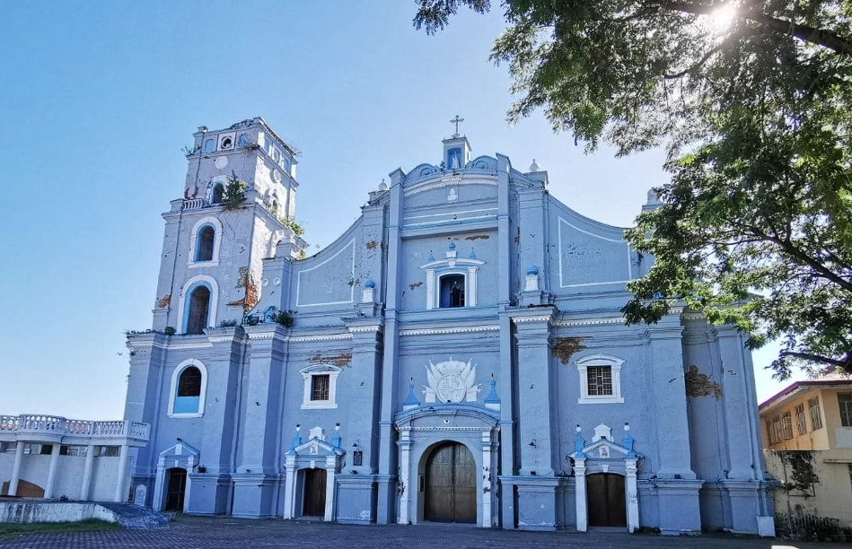

Diocesan Shrine and Parish of San Nicolás de Tolentino
Also known as San Nicolas Church, Diocesan Shrine and Parish of San Nicolás de Tolentino remains an essential landmark in San Nicolas, Ilocos Norte. It bears the history of San Nicolas with its baroque facade, the Spanish coat of arms, and a three-story bell tower. Discover the rich history of San Nicolas Church, the cornerstone of a town founded 1584 by the Augustinian friars. Originally named Visita de Caluntian, after the plentiful lanuti tree, the church was reconstructed in 1693 by Father Antonio Villanueva. Come explore the beauty and significance of this historic landmark.